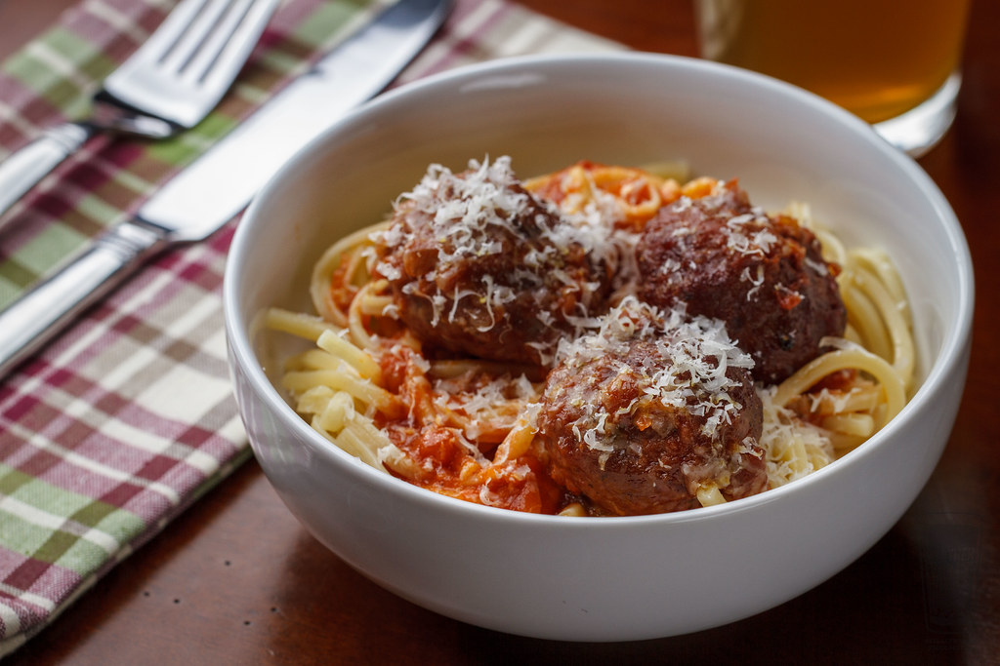

Home
Homemade Meatball Recipe

Description
This quick and easy recipe will leave you with a stockpile of meatballs worth their weight
in gold. This is a family recipe that has been around for at least one generation, so
I am completely biased in saying that these are the finest meatballs I have ever tasted. The
recipe is pretty straightforward, so good luck even though you won't need it. Additionally,
If you do go the "chef mike" route, I would heavily suggest that you leave enough space
between the individual meatballs in the casserole dish.
Ingredients
- 3/4 pound ground beef
- 1/4 pound ground pork
- 1 cup fine dry bread crumbs
- 1/2 cup parmesan cheese, grated
- 1 teaspoon parsley, minced
- 1 clove garlic, minced
- 1/2 cup milk
- 2 beaten eggs
- salt and pepper to taste
Steps
- Gather ingredients and a large mixing bowl.
- Incorporate all ingredients inside of the bowl and mix until homogenous.
- Roll meatballs to your desired size and place them in a casserole dish.
-
Either cover the casserole dish and cook in the microwave(trust me) or cook
the meatballs in a pot of tomato sauce. Cook until they reach an internal temperature
of 155 degrees Fahrenheit.